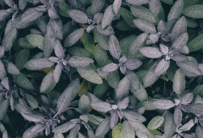
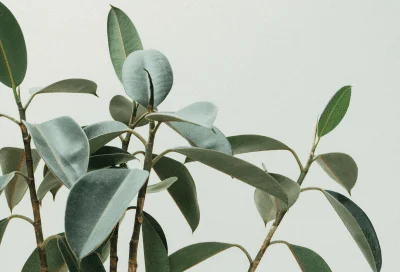
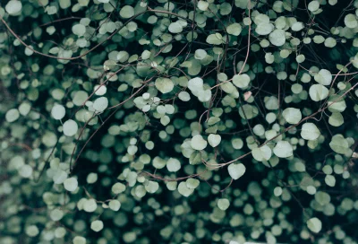

Сохранённые статьи
Грета, у вас 5 сохранённых статей
По ключевым словам: Природа, Тайга и 2 другим
Национальное достояние – парки
Природа
Убрать из сохранённых
2 августа, 2019В 2016 году Америка отмечала важный юбилей: сто лет назад здесь начала складываться система национальных парков – охраняемых территорий, где и сегодня каждый может приобщиться к природе.
Лента.руЛесные огоньки: история одной фотографии.
Убрать из сохранённых
2 августа, 2019Фотограф отвлеклась от освещения суровой политической реальности Мексики, чтобы запечатлеть ускользающую красоту одного из местных чудес природы.
МЕДУЗА«Первозданная тайга»: новый фотопроект Игоря Шпиленка
Убрать из сохранённых
2 августа, 2019Знаменитый фотограф снимает первозданные леса России, чтобы рассказать о необходимости их сохранения. В этот раз он отправился в Двинско-Пинежскую тайгу, где
РИА«Первозданная тайга»: новый фотопроект Игоря Шпиленка
Убрать из сохранённых
2 августа, 2019Знаменитый фотограф снимает первозданные леса России, чтобы рассказать о необходимости их сохранения. В этот раз он отправился в Двинско-Пинежскую тайгу, где
РИА«Первозданная тайга»: новый фотопроект Игоря Шпиленка
Убрать из сохранённых
2 августа, 2019Знаменитый фотограф снимает первозданные леса России, чтобы рассказать о необходимости их сохранения. В этот раз он отправился в Двинско-Пинежскую тайгу, где
РИА